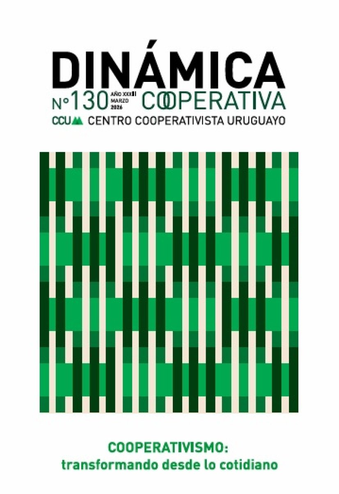
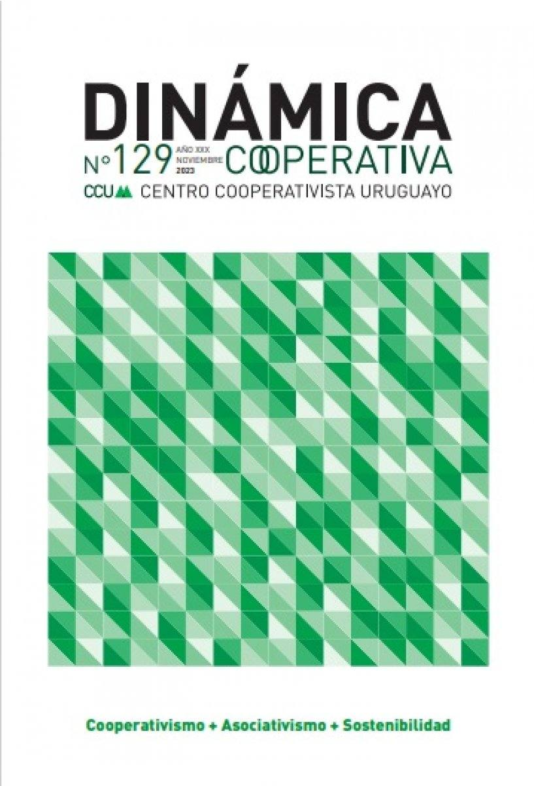
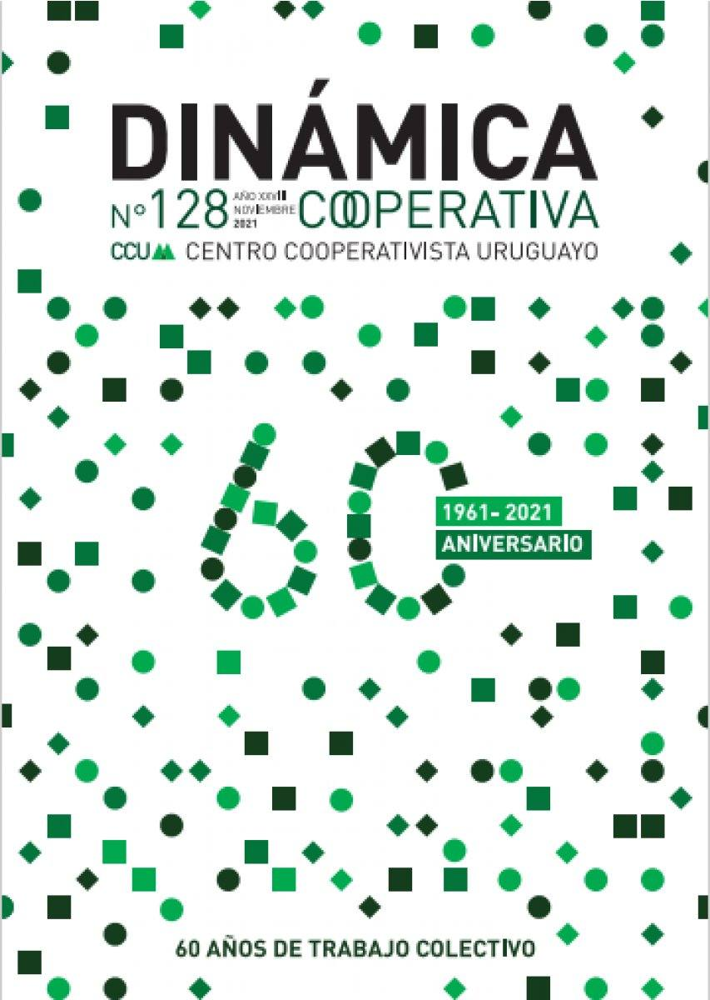
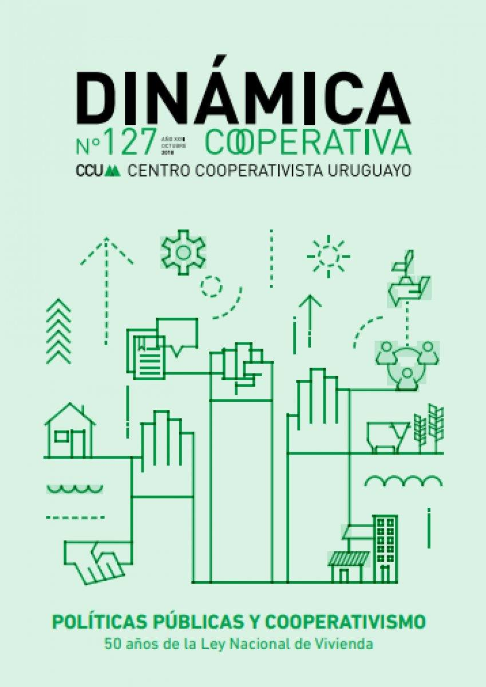

N.º 130
Cooperativismo: transformando desde lo cotidiano · 2026
Análisis, reflexión y propuestas sobre los desafíos del cooperativismo. Todas las ediciones y documentos se descargan libremente.
Publicación del Centro Cooperativista Uruguayo: un medio de comunicación independiente que difunde los procesos colectivos promovidos en nuestra labor diaria.

Cooperativismo: transformando desde lo cotidiano · 2026

Cooperativismo + Asociativismo + Sostenibilidad · 2023

60 años de trabajo colectivo · 2022

Políticas Públicas y Cooperativismo · 2022
Manuales, cartillas e investigaciones de las tres áreas de trabajo.